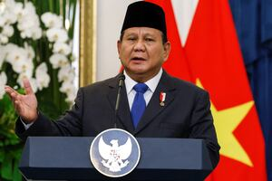

Parlemen Indonesia Siap Sahkan Revisi UU Militer

Parlemen Indonesia dijadwalkan mengesahkan revisi Undang-Undang Militer yang memungkinkan personel militer aktif menduduki lebih banyak posisi sipil dalam pemerintahan. Langkah ini memicu kekhawatiran di kalangan kelompok pro-demokrasi tentang kemungkinan kembalinya dominasi militer seperti era "Orde Baru" di bawah Presiden Suharto.
Revisi ini telah disetujui oleh komite parlemen yang membawahi urusan militer, pertahanan, dan kebijakan luar negeri, dan akan dibawa ke sidang pleno untuk pemungutan suara pada Kamis mendatang. Koalisi yang dipimpin Presiden Prabowo Subianto, mantan komandan pasukan khusus dan menantu Suharto, menguasai parlemen saat ini.
Kelompok pro-demokrasi mengkritik revisi ini karena dikhawatirkan dapat mengembalikan praktik-praktik era "Orde Baru" di mana militer memiliki peran dominan dalam pemerintahan dan sering menekan perbedaan pendapat. Sejak menjabat pada Oktober lalu, Presiden Prabowo telah memperluas peran angkatan bersenjata dalam berbagai sektor.
Revisi undang-undang ini mencakup ketentuan yang mewajibkan perwira militer untuk mengundurkan diri sebelum mengambil peran sipil. Selain itu, daftar lembaga negara yang dapat diisi oleh militer diperluas, termasuk kantor kejaksaan agung, sekretariat negara, badan penanggulangan terorisme, dan badan narkotika. Usia pensiun perwira juga diperpanjang dalam revisi ini.
Pemerintah beralasan bahwa revisi ini diperlukan untuk menghadapi tantangan domestik dan geopolitik saat ini. Namun, kelompok hak asasi manusia mengkritik proses pembahasan yang dianggap tergesa-gesa dan minim konsultasi publik. Pada Sabtu lalu, sejumlah aktivis menggelar protes di sebuah hotel di Jakarta saat anggota parlemen membahas revisi tersebut, menuduh mereka mengabaikan masukan publik.
Wakil Ketua Parlemen, Sufmi Dasco Ahmad, membantah tuduhan bahwa revisi ini dipaksakan dan menegaskan bahwa prosesnya transparan.